|
Introduction |
Method 1: Brush/Pencil | Method
2: Spot Healing Brush | Method 3: Healing Brush | Method
4:
Patch | Method 5: Content-Aware Move |
| Method 7: Remove Tool |
Content-Aware Fill is an amazing tool, but Photoshop has an even more effective tool to get the job done: the Remove Tool. This tool allows us to simply draw over an area of our image and Photoshop will magically remove the object. Now, before you think 'that's what Content-Aware Fill does' - hang on. The two actually work in completely different ways.
While the Content-Aware Fill works by sampling the pixels surrounding your selection, the Remove Tool uses machine learning (which is a type of AI, or Artificial Intelligence) to analyze the image and determine how best to not only remove the object, but to also fill the area with something that makes sense for the image. While Content-Aware Fill works great on images with consistent backgrounds (backgrounds that are similar throughout the entire image), it doesn't work very well for complicated backgrounds, such as the cars in the junkyard. However, the Remove Tool is specifically designed to work with complex backgrounds, edges, and can even preserve the image's perspective.
|
Quick side note here: WHAT IS AN IMAGE'S PERSPECTIVE? Image perspective refers to the idea that some objects in an image are closer to the viewer than others. Take a look at this image...
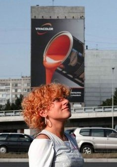 Along with being a clever image (get it? the paint is being poured on her head and thus coloring her hair...harhar), we have 7 distinct areas of identifiable distance, going from closest to farthest away they are:
As humans viewing the image, we are able to make the distinction between the different distances based on our experiences, the content of the image, and the shape of the objects. For example, one of the reasons we know the building on the left is the farthest object away from us is because, in the image, it is small and we know that buildings (compared to people) are not small. For the building to be small it must be far away. So what does all this have to do with Photoshop? Well, when we edit images with Photoshop, the software is generally unable to take any of this into consideration. As far as Photoshop is concerned, there is no girl, no vehicles, no road, and no buildings - only pixels. When you make a change, Photoshop only worries about the colors in the image and their relation to each other. It does not care about the actual subject of the image. When we apply machine learning to the image, Photoshop is able to identify that a person is in the foreground, as well as being able to identify vehicles, roads, and buildings, among other things. Not only that, but Photoshop recognizes that the girl is nearest to the viewer, as well as the other 6 image perspective distances. Because of this, when we make changes using the Remove Tool, Photoshop is able to adjust things so that the sense of depth within in the image is maintained. None of the other Photoshop tools we have covered can do this, which makes the Remove Tool a very powerful tool. |
We are going to use the Remove Tool on two different parts of the Colosseum image so we can get a good look at what it is capable of doing.
Right-click the
Content-Aware Move Tool and then click the
Remove Tool... 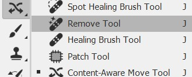
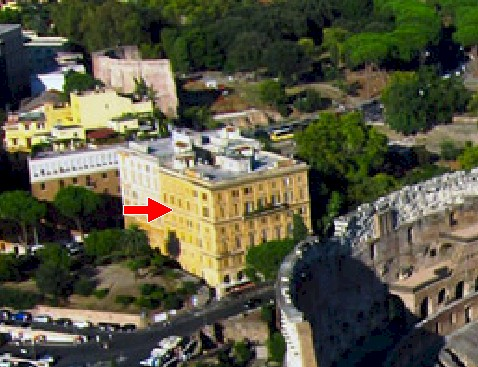
We are going to remove this entire building. Such a large, complicated object would be difficult to remove using the tools we have used so far, but watch how easy it is using the Remove Tool.
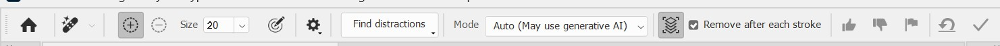
To select the building, we can either draw around the border and when we release the mouse button Photoshop will fill in our selection (if you try this, be sure you end at the same spot that you began to create an enclosed area), or you can simply draw over the building as if we were coloring it with the Brush Tool.
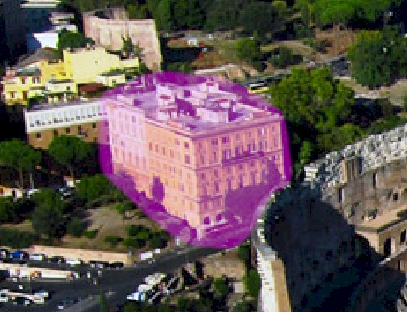
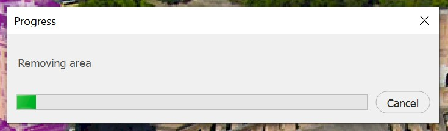
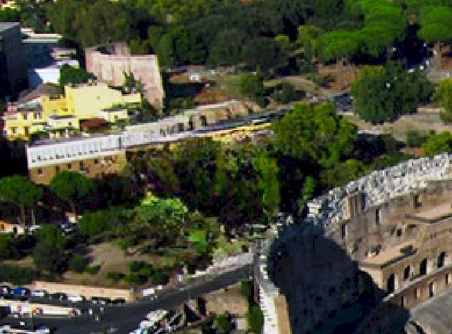
Keep in mind that your final result may be slightly different from mine (because you will have selected an area slightly different from my selection), but you should see something close...
| From this... | To this... |
|
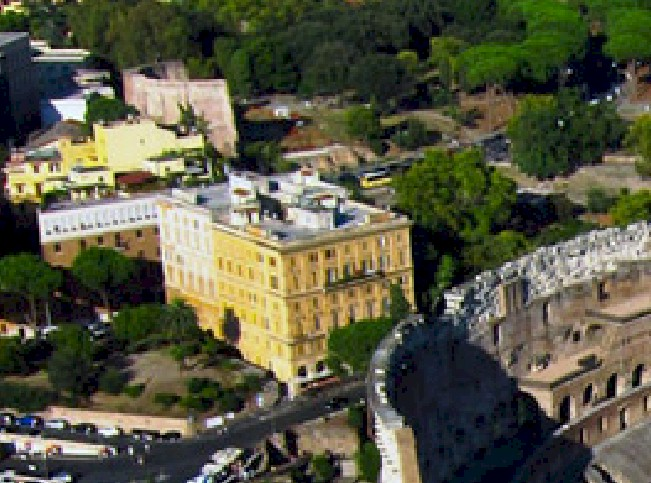 |
Basically what has happened here is the machine learning within Photoshop was not only able to identify that we wanted to remove a building, but noticed the trees around the yellow building and the additional structures behind it and developed objects to fill in the spot. However, you may notice that what happened was not perfect. For example, look closely at this part of the image...
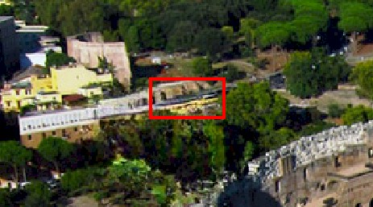
Photoshop probably did not do a very good job on the rocks or on the area directly behind the yellow car. For me, Photoshop just kinda extended the yellow cars body (keep in mind that it may or may not have done this to you depending on your selection). As it turns out, one of the really cool thing about the Remove Tool is that if things happened that we are not really happy with, we can simply reapply the tool and get different results.
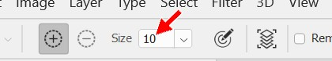
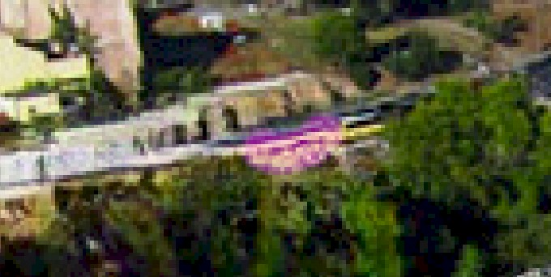
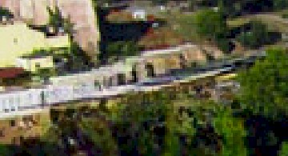
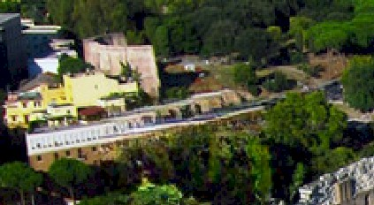
I'm not happy with the way the long white building on the left flows into the rock formation, but it will be difficult to separate the two using the Remove Tool because Photoshop will continue to use the objects on each side to identify what needs to be created to fill in the spot. There is an easer way to make small, quick fixes like this that we will explore with Method 9 two steps from now.
Next, let's take a look at removing some objects near lines, shadows, and areas we want to keep.
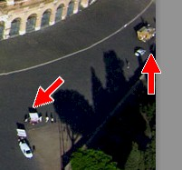
We are going to remove these two groups of vehicles and people at the same time. Right now, the Remove Tool is set to process changes each time we release the mouse button because we currently have the Remove after each stroke option activated, as indicated on the Remove Tool options bar...
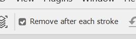
We need to deactivate this so that we can select two non-adjacent areas.
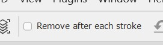
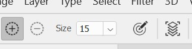
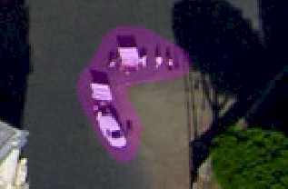
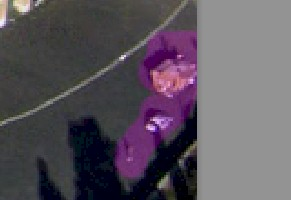
Note that if you paint over an area that you do not want to include, you can click the Subtract from brushed area icon...
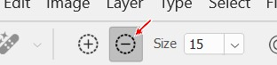
and paint over that area to remove it from the selection.
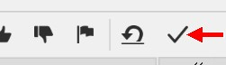
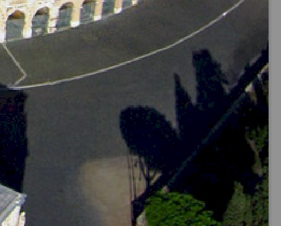
Pay particular attention to the vehicles from the left selection area that were parked alongside the dirt. Notice that not only did Photoshop successfully recognize that the vehicles were parked on asphalt, but it identified the dirt and kept the shape of it intact...
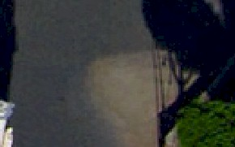
So how does the Remove Tool compare to the Content-Aware Fill tool? The image below is the same area we just worked with, except I used the Content-Aware Fill tool...
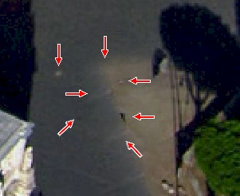
Notice that are many more blemishes, areas of distortion, and errors (the red arrows) in the end result that will have to be fixed using some other removal method. Also notice that the dirt area has been misshapen into a point instead of a nice curve. Clearly, the Remove Tool works better.
You may be wondering at this point what kind of job the Remove Tool would do on an image with a complicated background such as our junkyard image...
To test what we get in this instance, I made two different selections of the dark red car with tan roof...
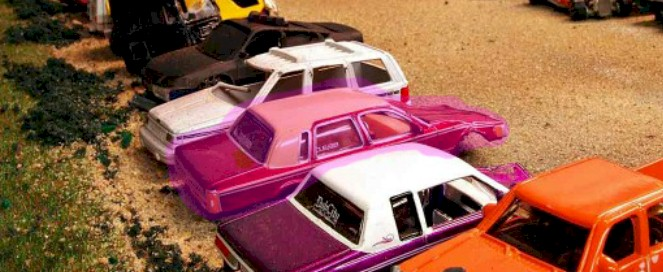
and let Photoshop's Remove Tool fill in the space. This is what Photoshop returned...
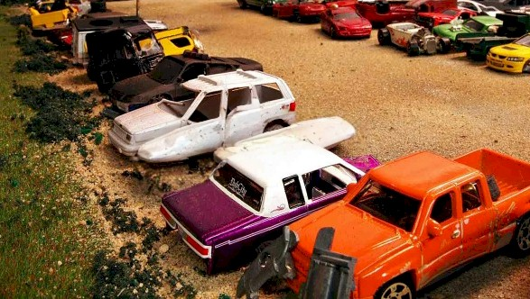
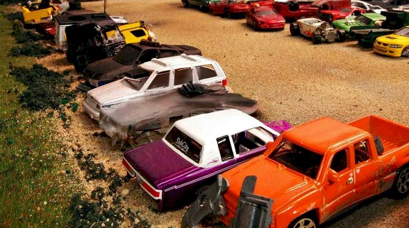
Note that in the first image on the left above that it kinda looks like Photoshop thought the white vehicle was a boat or a surfboard. In the second image above right, it is unclear where Photoshop got the information for the image it created. Remember that the difference between the two images comes entirely from the differences between the two selections that I made.
On this is very clear - if you were sitting there thinking that the Remove Tool can do everything and you'll just use that all of the time, as you can see that's not a good idea. It didn't do a very good job here. We can use some of the other removal methods to clean this image up and eventually get what we want, but this means the possibility of going outside Photoshop's tools and using additional images to solve our problems (for example, for this image we would need to find an image that shows the side of a car similar to the white car that we could use as source material and then fill in the gravel using other parts of this image).
While the Remove Tool does an amazing job, it obviously has some issues. Here are a few things to keep in mind while using the Remove Tool:
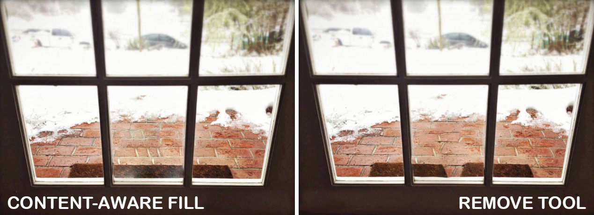
Let's save our work up to this point.
Our next tool, Generative Fill, not only allows us to remove objects, but can generate new objects to replace them.